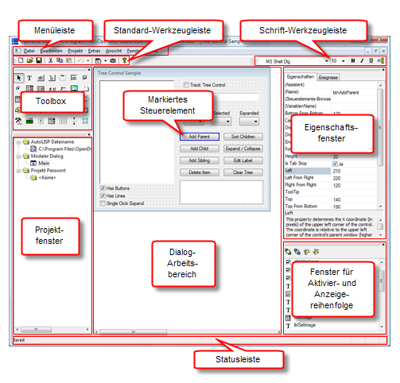

OpenDCL Studio dient dem Erstellen und Modifizieren von OpenDCL Projekten. Ein Projekt kann mehrere Dialoge und Bilder bzw. Symbole enthalten. Projektdateien werden mit der Dateierweiterung *.odcl gespeichert. Die folgende Abbildung gibt einen Überblick über die Hauptbestandteile des OpenDCL Studio Projekteditors.

Durch Rechtsklick in der Projektstruktur oder durch Auswahl eines Eintrags in der Menüschaltfläche in der Standard-Werkzeugleiste erstellen Sie neue Dialoge. Mit einem Doppelklick eines Dialogs in der Projektstruktur öffnen Sie ein existierenden Dialog, um ihn zu modifizieren. Bitte beachten Sie, dass Sie den Bildschirm über das Menü Fenster zugunsten der gleichzeitigen Anzeige mehrerer Dialoge aufteilen können.
Aus der Toolbox wählen Sie Steuerelemente aus, die Sie auf dem aktuellen Dialog absetzen können. Mit gedrückter linker Maustaste ziehen Sie ein Fenster auf, um die Lage und Größe des gewählten Steuerelements zu bestimmen. Die Lage und Größe eines Steuerelements können Sie nachträglich mit gedrückter linker Maustaste auf dem Steuerelement oder an seinen Kanten einstellen oder die Position mit Hilfe der Pfeiltasten Pixel für Pixel verändern. Den ausgewählten Steuerelementen können Sie eine andere Vorgabe-Schriftart zuweisen, indem Sie eine andere Schriftart aus der Schrift-Werkzeugleiste auswählen. Im Eigenschaftsfenster können Sie alle anderen Eigenschaften der gewählten Steuerelemente ändern oder im Kontextmenü der rechten Maustaste den Befehl Eigenschaften auswählen.
Das Fenster der Aktivier- bzw. Anzeigereihenfolge zeigt die aktuelle Reihenfolge an, nach der die Steuerelemente eines Dialogs durch Drücken der Tabulatortaste angesteuert werden können. Mit gedrückter linker Maustaste verschieben Sie ausgewählte Steuerelemente in der Aktivier- und Anzeigereihenfolge. Diese Reihenfolge kann auch dazu verwendet werden, um zu erzwingen, dass sich ein bestimmtes Steuerelement "unter" einem anderen befindet. Bitte beachten Sie, dass die Anzeigereihenfolge im Editor unter Umständen nicht korrekt wiedergegeben wird!
Ist die Schaltfläche für die Auswahl von Steuerelementen ( ) in der Toolbox aktiviert, können ein oder mehrere Steuerelemente zum Bearbeiten markiert werden. Klicken Sie nun auf ein Steuerelement auf der Dialogbox, ist es markiert. Mit gedrückter Strg-Taste können Sie weitere Steuerelemente anpicken, um sie der Auswahl hinzuzufügen. Klicken Sie ein Steuerelement an, ohne die Strg-Taste gedrückt zu halten, wird das Steuerelement ausgewählt und die vorherige Auswahl aufgehoben. Klicken Sie auf einen freien Bereich der Dialogbox und halten Sie die linke Maustaste gedrückt, beginnt eine Drag-Operation, mit der mehrere Steuerelemente innerhalb bzw. durch Berühren des Auswahlfensters ausgewählt werden können.
) in der Toolbox aktiviert, können ein oder mehrere Steuerelemente zum Bearbeiten markiert werden. Klicken Sie nun auf ein Steuerelement auf der Dialogbox, ist es markiert. Mit gedrückter Strg-Taste können Sie weitere Steuerelemente anpicken, um sie der Auswahl hinzuzufügen. Klicken Sie ein Steuerelement an, ohne die Strg-Taste gedrückt zu halten, wird das Steuerelement ausgewählt und die vorherige Auswahl aufgehoben. Klicken Sie auf einen freien Bereich der Dialogbox und halten Sie die linke Maustaste gedrückt, beginnt eine Drag-Operation, mit der mehrere Steuerelemente innerhalb bzw. durch Berühren des Auswahlfensters ausgewählt werden können.
Haben Sie mehrere Steuerelemente ausgewählt und den Wert einer Eigenschaft im Eigenschaftsfenster verändert, wird die Änderung auf alle ausgewählten Steuerelemente angewandt, die die geänderte Eigenschaft unterstützen. Das ist eine sehr bequeme Möglichkeit, in einem Schritt gleiche Eigenschaften mehrerer Steuerelemente anzupassen. So können beispielsweise mehrere links ausgerichtete Steuerelemente auf einen gleichen Abstand vom linken Dialogboxrand eingestellt werden, wenn die betroffenen Steuerelemente ausgewählt werden und sie einen gemeinsamen Wert für die Eigenschaft Left erhalten.
Eigenschaften der Steuerelemente können zum Zeitpunkt der Erstellung der Dialogbox auf verschiedene Art und Weise geändert werden. Die einfachste Art und Weise ist es, das Steuerelement zu markieren und die Eigenschaft im Eigenschaftsfenster zu verändern. Klicken Sie auf die gewünschte Eigenschaft im Eigenschaftsfenster, wodurch das entsprechende Eingabefefeld editierbar wird. Texte und numerische Werte können Sie darin dierekt eingeben und durch Drücken der Eingabetaste bestätigen. Eigenschaften, die über eine interne Werteliste verfügen, zeigen anstelle des Eingabefeldes eine Auswahlliste an, aus dem Sie den neuen Wert bzw. Zustand auswählen können. Eigenschaften, die eine Liste beinhalten, unterstützen die Eingabe von Listenwerten, die durch einen senkrechten Strich ("|") voneinander getrennt werden. Bool'sche (logische) Werte stellen ein Kontrollkästchen dar, das ein- oder ausgeschalten werden kann. Einige Eigenschaften, wie die Eigenschaft Font, öffnen eine untergeordnete Dialogbox für Änderungen an den Einstellungen.
Der Eigenschaften-Assistent bietet eine anwenderfreundliche Schnittstelle zur Änderung verschiedener Eigenschaften. Der Eigenschaften-Assistent wird geöffnet, wenn Sie ein Steuerelement im Fenster der Aktivier- und Anzeigereihenfolge doppelt klicken oder die rechte Maustaste auf einem Steuerelement klicken und aus dem Kontextmenü den Menüpunkt Eigenschaften aufrufen oder aber die Eigenschaft (Assistent) des ausgewählten Steuerelements im Eigenschaftsfenster anklicken. Für einige allgemeine Steuerelemente, wie ToolTips, Schriftarten und Ausrichtung der Steuerelementgeometrie ist der Eigenschaften-Assistent die einzige Möglichkeit, Änderungen zum Zeitpunkt der Erstellung vorzunehmen. Für einige Steuerelemente, wie Datenblatt, Karteikartenreiter und Kombinationsfeld mit Bildern gibt es eine Reihe von versteckten Eigenschaften, die nicht im Eigenschaftsfenster angezeigt werden können und sich deshalb nur im Eigenschaften-Assistenten ändern lassen.
Die Definition skalierbarer Dialogfenster ist eine wichtige Funktion, die sich mit OpenDCL Studio sehr einfach umsetzen lässt. Um einen Dialog sklierbar zu gestalten, muss die Eigenschaft Allow Resizing auf Ja gesetzt sein und die Steuerelemente müssen darauf reagieren können, wenn der Anwender später die Größe des Dialogs ändert. Die Eigenschaften, die das Verhalten beim Skalieren steuern, können im Eigenschaften-Assistenten in der Karteikarte Geometrie auf visuellem Wege eingestellt werden.